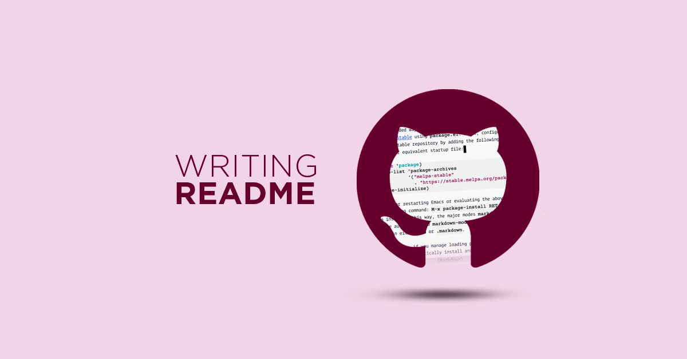
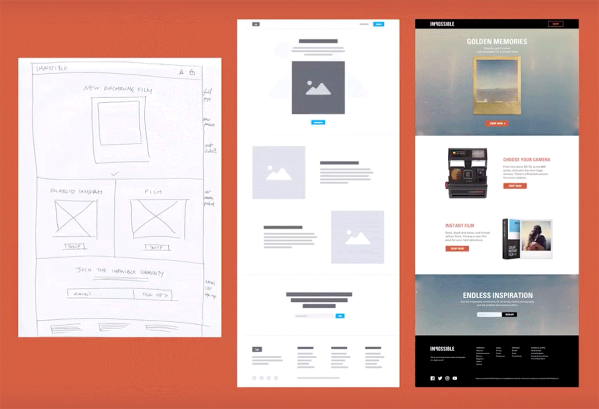
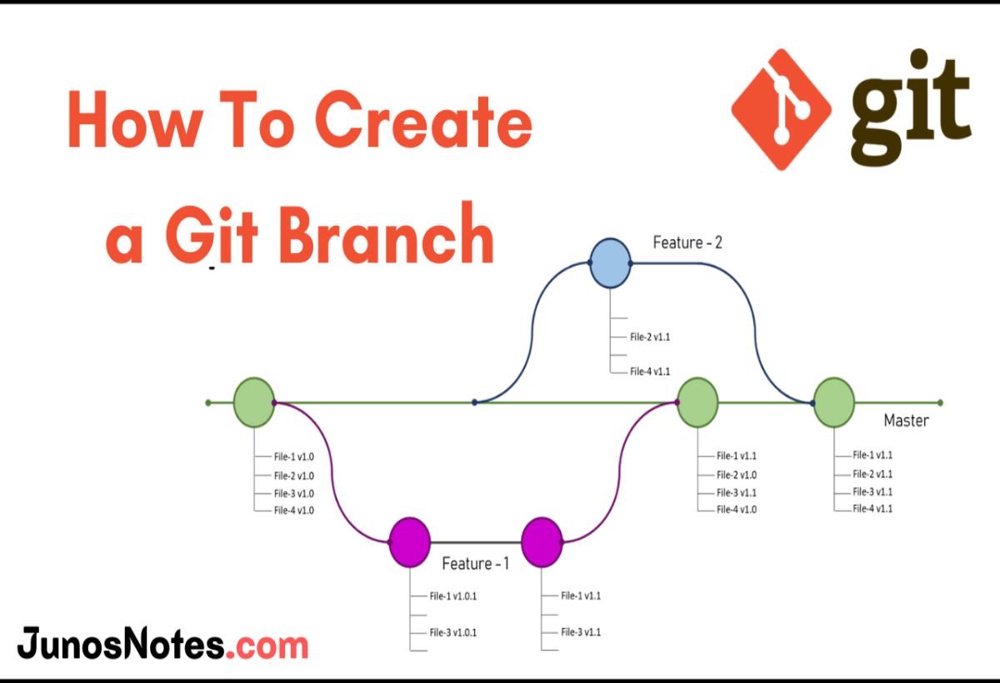

What is the purpose of a README file?
A README file gives readers a quick, clear understanding of a project.
It explains what the project does, why it exists, and how to use it.
In most cases, it includes setup steps, usage examples, and guidance for anyone who wants to contribute.
It’s essentially the project’s introduction and user manual in one place.
Read more

What is the purpose of a wireframe?
A wireframe shows the basic layout of a website or app before any design work begins.
Its purpose is to map out structure, content placement, and user flow so teams can agree
on functionality early, avoid costly changes later, and create a clear blueprint for the final design.
Read more

What is a branch in Git?
A branch in Git is an independent line of development that lets you work on new features
or fixes without affecting the main codebase. It creates a safe space to experiment, collaborate,
and make changes, which can later be merged back into the main project when ready.
Read more